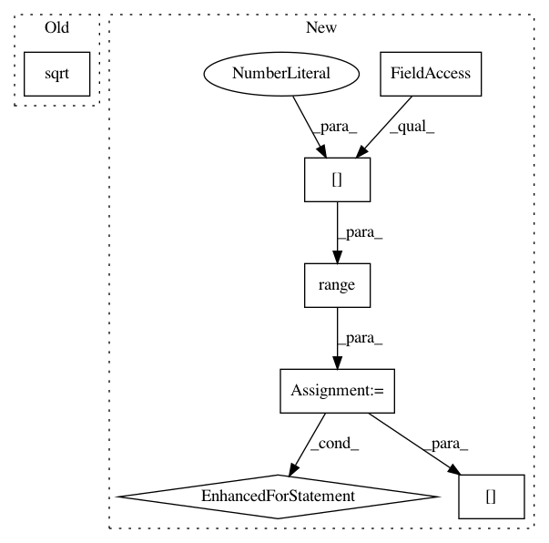

fc77bf19a2929bdb181f95f0ea272eb7283c4efc,geomstats/spd_matrices_space.py,SPDMatricesSpace,sqrtm,#SPDMatricesSpace#Any#,152
Before Change
[eigenvalues, vectors] = np.linalg.eigh(sym_mat)
sqrt_eigenvalues = np.sqrt(eigenvalues)
diag = np.diag(np.squeeze(sqrt_eigenvalues, axis=0))
diag = vectorization.to_ndarray(diag, to_ndim=3)
sqrt_mat = np.einsum("ijk,ikl,ilm->ijm",
After Change
// vectors, diag, vectors)
sqrt_mat = np.zeros_like(sym_mat)
for i in range(sqrt_mat.shape[0]):
sqrt_mat[i] = scipy.linalg.sqrtm(sym_mat[i])
sqrt_mat = vectorization.to_ndarray(sqrt_mat, to_ndim=3)
return sqrt_mat
def random_uniform(self, n_samples=1):
In pattern: SUPERPATTERN
Frequency: 3
Non-data size: 7
Instances
Project Name: geomstats/geomstats
Commit Name: fc77bf19a2929bdb181f95f0ea272eb7283c4efc
Time: 2018-05-03
Author: ninamio78@gmail.com
File Name: geomstats/spd_matrices_space.py
Class Name: SPDMatricesSpace
Method Name: sqrtm
Project Name: chainer/chainerrl
Commit Name: 3dc5c5719c2a56818f3c0c48f7268422a1f089c8
Time: 2016-05-22
Author: muupan@gmail.com
File Name: tests/test_policy_output.py
Class Name: TestGaussianPolicyOutput
Method Name: test_sampled_actions_log_probs
Project Name: freelunchtheorem/Conditional_Density_Estimation
Commit Name: da42c137d164ab56a1f1919c8f0ee21e6172f120
Time: 2018-03-20
Author: jonas.rothfuss@gmx.de
File Name: cde/evaluation/GoodnessOfFit.py
Class Name: GoodnessOfFit
Method Name: hellinger_distance_monte_carlo